韓国 2014年7月30日アップデート
※韓国公式と韓国人プレイヤーから頂いた情報を基にしています。誤訳や韓国独自仕様の可能性もありますので、予めご了承下さい。2014年7月30日 韓国大型アップデートの変更内容一覧
水着コスチューム実装
未実装アイテム「転生者専用鎧」
水着コスチューム実装
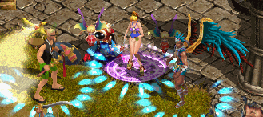
| 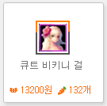 |
7月30日〜8月20の期間限定で水着コスチュームが販売中 課金アイテム限定 13200ウォン |
| 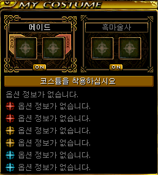 | また、コスチュームの見た目用スロットが追加されました。 見た目は水着、クレストの能力は通常コスチューム、 など2つのコスチュームを使い分けることができます。 日本では9月下旬のアップデートにて実装予定。 詳細は ⇒プレミアムコスチュームの追加をご検討されているお客様へ |
水着コスチューム
| 剣士 × トロピカルガイ | 戦士 × ハンサムボートマン |
|---|---|
| 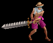 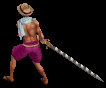 | |
| ランサー × ネイビーセイラー | アーチャー × スカルコルセア |
| 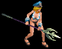 | |
| ウィザード × プレイボーイスイマー | ウルフマン × ドックチューブビースト |
| ビショップ × ライフガードブラザー | 追放天使 × カーニバルエンジェル |
| 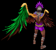 | |
| ビーストテイマー × チアフルビキニガール | サマナー × キュートビキニガール |
| シーフ × ビーチギャングスター | 武道家 × ブロンズガイ |
| プリンセス × スクールプリンセス | リトルウィッチ × スレンダーワンピース |
| ネクロマンサー × ダイビングスーツ | 悪魔 × サンバクイーン |
| 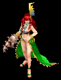 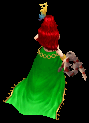 | |
| 霊術師 × グラマラスビキニレディー | 闘士 × ワイルドビキニレディー |
| 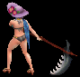 | |
| 光奏師 × ライフベストボーイ | 獣人 × スイミングコーチ |
| 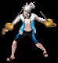 | |
| メイド × サマーメイド | 黒魔術師 × スリップビキニガール |
| 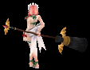 |
未実装アイテム「転生者専用鎧」
2013年6月のアップデートにて韓国で実装予定だった転生者専用装備は、ゲームバランスに問題が生じる恐れがあるとの理由から実装が見送られていましたが、韓国で誤ってドロップしてしまったためにその内容が発覚！
（韓国人プレイヤーからまた「韓国より先に日本で情報が出回っている！ズルイ」と言われそうですが…）
某イケメン様の解析により判明した情報を韓国に先行して公開いたします。
※開発中の内容のため、実装時に仕様変更される可能性もあります。予めご了承下さい。
転生者専用鎧とは？
・試練のダンジョンのクリア報酬である「勇者の証」を通常の職業鎧に使用して強化した鎧。
・?〜?とフィナーレの4段階があり、段階によって1〜3次転生が装備条件となる。
試練のダンジョンとは？
・7月9日のアップデートで実装予定だったが延期になり、現在は未実装。
・Lv400以上で入場できる。
・パーティーでもソロでも進行可能。ソロの場合は進行方法を選択できるが、パーティー時より難易度が上がる。
・制限時間内に全てのモンスターを倒すことでクリアとなり、討伐時間が早いほど多くの経験値を獲得できる。
・パーティーボスモンスター討伐時や特定の秘密ダンジョンクリア時に入手できる「試練のクリスタルのかけら」を10個集め、「試練のクリスタル」を作成することで入場できる。
| 1次強化 | 通常 |
|---|---|
| <基本情報> 防御力 +30 幸運 +50 回避率 +15％ 防御力 +145％ 力 +1/レベル 2 最大HP +80％ クリティカル発動確率 +7％ 攻撃速度 +5％ <錬成 オプション 情報> アイテム着用レベル -60 防御力 +95％ 防御力 +37 ダブルクリティカルダメージ 10％ 増加 <説明> カタリナ卿の威厳をさらに強化した1次モード。非常に強力すぎるため自身の限界を超えた者だけが使用することができる。 ※ 封印された力を解放するには‘封印解放道具箱'が必要です <要求能力値> レベル 392 <着用可能な職業> メイド 黒魔術師 |
<基本情報> 防御力 +[19~30] 幸運 +[7~50] 回避率 +15％ 防御力 +145％ 力 +1/レベル 2 最大HP +80％ <錬成 オプション 情報> アイテム着用レベル -60 防御力 +95％ 防御力 +37 ダブルクリティカルダメージ 10％ 増加 <説明> メイドとして初めて王国騎士になったカタリナ卿の威厳は、メイドを単純な家事労働者として扱うのではなく、小さくは家門の為、大きくは王国のために必ず必要な存在であることを示している ※ 封印された力を解放するには‘封印解放道具箱'が必要です <要求能力値> レベル 392 <着用可能な職業> メイド 黒魔術師 |
| 4次強化 （3次転生者用） | 通常 |
|---|---|
| <基本情報> 防御力 +26 回避率 +4％ 防御力 +100％ 命中率 +21％ 回避率 +14％ ダメージ +50％ ブロック率 +15％ 健康 +1/レベル 3 <錬成 オプション 情報> アイテム着用レベル -67 防御力 +110％ 防御力 +41 ダブルクリティカルダメージ 12％ 減少 <説明> 正義の剣士カルス・フォン・リヒャルトハイムが愛用する肩当てをさらに強化した最終形態。非常に強力すぎるため自身の限界を超えた者だけが使用することができる。 ※ 封印された力を解放するには‘封印解放道具箱'が必要です <要求能力値> レベル 499 敏捷 132 <着用可能な職業> 剣士 戦士 |
<基本情報> 防御力 +[18~26] 回避率 +[3~4]％ 防御力 +35％ 命中率 +21％ 回避率 +14％ ダメージ +45％ 鎧破壊攻撃 +5％(6秒) <錬成 オプション 情報> アイテム着用レベル -57 防御力 +90％ 防御力 +36 ダブルクリティカルダメージ 10％ 減少 <説明> 正義の剣士カルス・フォン・リヒャルトハイムが愛用する肩当て。すべての剣士の手本となるその姿は正義と猟奇で一丸となって団結している。 ※ 封印された力を解放するには‘封印解放道具箱'が必要です <要求能力値> レベル 499 敏捷 132 <着用可能な職業> 剣士 戦士 |
| ヴォルフラムファー[Nx]"フィナーレ" | ヴォルフラムファー[Nx] |
| <基本情報> 防御力 +16 知識 +50 知識 +1/レベル 3 スキルレベル +7 魔法攻撃力を20％強化させる。 最大CP +300 ターゲットの魔法抵抗を15％弱化させる。 CP獲得ボーナス 10％ <錬成 オプション 情報> アイテム着用レベル -83 ファイアボールの個数 4個増加 防御力 +53 変身の強制解除無効 <説明> 巨大な狼人間ヴォルフラムの毛を集めて編んだコートをさらに強化した最終形態。非常に強力すぎるため自身の限界を超えた者だけが使用することができる。 ※ 封印された力を解放するには‘封印解放道具箱'が必要です <要求能力値> レベル 523 カリスマ 150 <着用可能な職業> ウィザード ウルフマン |
<基本情報> 防御力 +[14~16] 知識 +[30~50] 知識 +1/レベル 3 スキルレベル +5 魔法攻撃力を7％強化させる。 ノックバック抵抗 +75％ 集中力 +20％ 減少限界CP +50 <錬成 オプション 情報> アイテム着用レベル -75 ファイアボールの個数 3個増加 防御力 +48 変身の強制解除無効 <説明> 巨大な狼人間ヴォルフラムは初夏になると毛が生え変わると言う。その毛を集めて編んでみたコートだ。 ※ 封印された力を解放するには‘封印解放道具箱'が必要です <要求能力値> レベル 523 カリスマ 150 <着用可能な職業> ウィザード ウルフマン |
| <基本情報> 防御力 +20 すべての状態異常 抵抗 +30％ 知識 +1/レベル 3 力 +1/レベル 3 光属性攻撃力を35％強化させる。 健康 +130 最大HP +300 スキルレベル +7 <錬成 オプション 情報> アイテム着用レベル -91 防御力 +135％ 防御力 +62 変身の強制解除無効 <説明> 堕落した天使ジャ・シーンが着ていた服をさらに強化した最終形態。非常に強力すぎるため自身の限界を超えた者だけが使用することができる。 ※ 封印された力を解放するには‘封印解放道具箱'が必要です <要求能力値> レベル 552 知恵 123 <着用可能な職業> ビショップ 追放天使 |
<基本情報> 防御力 +20 すべての状態異常 抵抗 +[15~30]％ 知識 +1/レベル 4 力 +1/レベル 3 光属性攻撃力を25％強化させる。 防御力 +35％ 最大HP +200 移動速度 +25％ <錬成 オプション 情報> アイテム着用レベル -79 防御力 +120％ 防御力 +50 変身の強制解除無効 <説明> 一時期すごい天使であったジャ・シーンは慢心により堕落して、一世代を恐怖に染めた悪魔へと変わってしまった。結局、悪魔は勇者の手で退治されてしまうが･･････。 ※ 封印された力を解放するには‘封印解放道具箱'が必要です <要求能力値> レベル 552 知恵 123 <着用可能な職業> ビショップ 追放天使 |
| 古い道士服[Nx]"フィナーレ" | 古い道士服[Nx] |
| <基本情報> 防御力 +21 幸運 +60 力 +1/レベル 3 敏捷 +1/レベル 4 ダメージ +50％ 運 +130 攻撃速度 +30％ スキルレベル +7 <錬成 オプション 情報> アイテム着用レベル -88 防御力 +123％ 防御力 +54 ダブルクリティカルダメージ 12％ 減少 <説明> 古くさくてあちこち破れた道士服をさらに強化した最終形態。非常に強力すぎるため自身の限界を超えた者だけが使用することができる。 ※ 封印された力を解放するには‘封印解放道具箱'が必要です <要求能力値> レベル 528 知恵 149 <着用可能な職業> シーフ 武道家 |
<基本情報> 防御力 +[16~21] 幸運 +[30~60] 力 +1/レベル 3 敏捷 +1/レベル 5 ダメージ +40％ 移動速度 +15％ 攻撃速度 +30％ スキルレベル +4 <錬成 オプション 情報> アイテム着用レベル -75 防御力 +116％ 防御力 +48 ダブルクリティカルダメージ 10％ 減少 <説明> 古くさくてあちこち破れた道士服。年月が感じられる。 ※ 封印された力を解放するには‘封印解放道具箱'が必要です <要求能力値> レベル 528 知恵 149 <着用可能な職業> シーフ 武道家 |
| 魔法騎士エリプシャン[Nx]"フィナーレ" | 魔法騎士エリプシャン[Nx] |
| <基本情報> 防御力 +33 敏捷 +50 力 +1/レベル 3 知識 +1/レベル 3 ダメージ +50％ CP獲得ボーナス 10％ 攻撃速度 +10％ クリティカル発動確率 +10％ <錬成 オプション 情報> アイテム着用レベル -99 防御力 +145％ 防御力 +64 ダブルクリティカルダメージ 12％ 減少 <説明> エリプトのランサーが着ていた鎧をさらに強化した最終形態。非常に強力すぎるため自身の限界を超えた者だけが使用することができる。 ※ 封印された力を解放するには‘封印解放道具箱'が必要です <要求能力値> レベル 638 健康 250 運 122 <着用可能な職業> ランサー アーチャー |
<基本情報> 防御力 +[27~33] 敏捷 +[30~50] 力 +1/レベル 4 知識 +1/レベル 3 魔法攻撃力を15％強化させる。 CP獲得ボーナス 5％ 攻撃速度 +10％ 最大CP +150％ <錬成 オプション 情報> アイテム着用レベル -91 防御力 +138％ 防御力 +58 ダブルクリティカルダメージ 10％ 減少 <説明> エリプトのランサーたちは槍に魔法をかける独特な戦闘方法を使う者として有名であったが、一般人たちは彼らをエリプシャンとも呼んだりした。 ※ 封印された力を解放するには‘封印解放道具箱'が必要です <要求能力値> レベル 638 健康 250 運 122 <着用可能な職業> ランサー アーチャー |
| 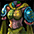 ビスルキルト[Nx]"フィナーレ" | ビスルキルト[Nx] |
| <基本情報> 防御力 +14 火, 水, 風, 大地 抵抗 +20％ 魔法 抵抗 +20％ 力 +1/レベル 3 知識 +1/レベル 4 敏捷 +1/レベル 5 召喚獣のすべてのステータスが250増加 最大HP +75％ スキルレベル +7 <錬成 オプション 情報> アイテム着用レベル -79 召喚獣の魔法攻撃力 +12％ ペットの魔法攻撃力 +12％ ダブルクリティカルダメージ 12％ 減少 <説明> ロマ村ビスルのキルトをさらに強化した最終形態。非常に強力すぎるため自身の限界を超えた者だけが使用することができる。 ※ 封印された力を解放するには‘封印解放道具箱'が必要です <要求能力値> レベル 487 知恵 202 <着用可能な職業> ビーストテイマー サマナー |
<基本情報> 防御力 +[12~14] 火, 水, 風, 大地 抵抗 +[10~20]％ 魔法 抵抗 +[10~20]％ 力 +1/レベル 4 知識 +1/レベル 5 敏捷 +1/レベル 6 召喚獣のすべてのステータスが200増加 最大HP +50％ スキルレベル +4 <錬成 オプション 情報> アイテム着用レベル -70 召喚獣の魔法攻撃力 +10％ ペットの魔法攻撃力 +10％ ダブルクリティカルダメージ 10％ 減少 <説明> ロマ村ビスルのキルトはその精巧な針使いで定評があるが、その布で服を作れば神獣たちが特によく寄って来るようになると言う。 ※ 封印された力を解放するには‘封印解放道具箱'が必要です <要求能力値> レベル 487 知恵 202 <着用可能な職業> ビーストテイマー サマナー |
| レイリーのレプリカ[Nx]"フィナーレ" | レイリーのレプリカ[Nx] |
| <基本情報> 防御力 +20 カリスマ +40 敏捷 +1/レベル 3 力 +1/レベル 3 カリスマ +1/レベル 3 最大体力 +300 攻撃速度 +10％ スキルレベル +7 <錬成 オプション 情報> アイテム着用レベル -101 防御力 +144％ 防御力 +62 ダブルクリティカルダメージ 12％ 減少 <説明> 麗しの淑女レイリーのドレスをさらに強化した最終形態。非常に強力すぎるため自身の限界を超えた者だけが使用することができる。 ※ 封印された力を解放するには‘封印解放道具箱'が必要です <要求能力値> レベル 608 カリスマ 70 <着用可能な職業> プリンセス リトルウィッチ |
<基本情報> 防御力 +[17~20] カリスマ +40 敏捷 +1/レベル 3 力 +1/レベル 3 CP獲得ボーナス 10％ 移動速度 +10％ 防御力 +20 スキルレベル +5 <錬成 オプション 情報> アイテム着用レベル -87 防御力 +132％ 防御力 +55 ダブルクリティカルダメージ 10％ 減少 <説明> 麗しの淑女レイリーをまねて作ったというプリンセスのドレス。レイリー本来の姿には全く及ばないが、これが人間の出せる限界だろう。 ※ 封印された力を解放するには‘封印解放道具箱'が必要です <要求能力値> レベル 608 カリスマ 70 <着用可能な職業> プリンセス リトルウィッチ |
| 五月の女王[Nx]"フィナーレ" | 五月の女王[Nx] |
| <基本情報> 防御力 +24 カリスマ +50 知識 +1/レベル 3 魔法攻撃力を20％強化させる。 最大CP +50％ スキルレベル +7 ターゲットの光抵抗を15％弱化させる。 健康 +1/レベル 4 <錬成 オプション 情報> アイテム着用レベル -123 防御力 +166％ 防御力 +71 変身の強制解除無効 <説明> 裁断師エンド氏の傑作ドレスをさらに強化した最終形態。非常に強力すぎるため自身の限界を超えた者だけが使用することができる。 ※ 封印された力を解放するには‘封印解放道具箱'が必要です <要求能力値> レベル 727 カリスマ 120 <着用可能な職業> プリンセス リトルウィッチ |
<基本情報> 防御力 +[19~24] カリスマ +50 知識 +1/レベル 3 魔法攻撃力を20％強化させる。 最大CP +20％ 防御力 +30 防御力 +60％ ユニークアイテムドロップ確率 +40％ <錬成 オプション 情報> アイテム着用レベル -104 防御力 +155％ 防御力 +66 変身の強制解除無効 <説明> 若さと美しさ、柔らかさがよく表現された、裁断師エンド氏の傑作。数着しか現存しない。 ※ 封印された力を解放するには‘封印解放道具箱'が必要です <要求能力値> レベル 727 カリスマ 120 <着用可能な職業> プリンセス リトルウィッチ |
| ダマテルの肋骨[Nx]"フィナーレ" | ダマテルの肋骨[Nx] |
| <基本情報> 防御力 +24 すべてのスキルレベル +3 ダメージ +50％ 攻撃速度 +7％ 最大CP +250％ スキルレベル +4 ターゲットの魔法抵抗を17％弱化させる。 魔法攻撃力を20％強化させる。 <錬成 オプション 情報> アイテム着用レベル -123 防御力 +172％ 防御力 +74 変身の強制解除無効 <説明> 大天使ダマテルの肋骨から作られた鎧をさらに強化した最終形態。非常に強力すぎるため自身の限界を超えた者だけが使用することができる。 ※ 封印された力を解放するには‘封印解放道具箱'が必要です <要求能力値> レベル 734 カリスマ 366 <着用可能な職業> ネクロマンサー 悪魔 |
<基本情報> 防御力 +[21~24] すべてのスキルレベル +[1~3] ダメージ +50％ 防御力 +50％ 最大CP +250％ スキルレベル +3 ターゲットの魔法抵抗を15％弱化させる。 魔法攻撃力を15％強化させる。 <錬成 オプション 情報> アイテム着用レベル -105 防御力 +157％ 防御力 +67 変身の強制解除無効 <説明> 大天使ダマテルの肋骨から作られたと伝えられている鎧。天使の肋骨がどうして悪魔の服になったのかは伝えられていない。 ※ 封印された力を解放するには‘封印解放道具箱'が必要です <要求能力値> レベル 734 カリスマ 366 <着用可能な職業> ネクロマンサー 悪魔 |
| ティモナメイル[Nx]"フィナーレ" | ティモナメイル[Nx] |
| <基本情報> クリティカル +4％ 防御力 +26 命中率 +10％ 攻撃を受けると 10％の確率でダメージの100％を応急処置 最大HP +100％ 健康 +1/レベル 2 CP獲得ボーナス 10％ 攻撃速度 +8％ <錬成 オプション 情報> アイテム着用レベル -69 防御力 +123％ 防御力 +52 ダブルクリティカルダメージ 12％ 減少 <説明> 霊術師たちの憧れの存在といわれるティモナが愛用していた服をさらに強化した最終形態。非常に強力すぎるため自身の限界を超えた者だけが使用することができる。 ※ 封印された力を解放するには‘封印解放道具箱'が必要です <要求能力値> レベル 367 敏捷 352 <着用可能な職業> 霊術師 闘士 |
<基本情報> クリティカル +[3~4]％ 防御力 +[18~26] 防御力 +220％ 攻撃を受けると 10％の確率でダメージの100％を応急処置 最大HP +70％ 健康 +1/レベル 2 <錬成 オプション 情報> アイテム着用レベル -60 防御力 +94％ 防御力 +38 ダブルクリティカルダメージ 10％ 減少 <説明> 霊術師たちの憧れの存在といわれるティモナが愛用していた服。この服を着ると強くなれるという噂があり、ティモナが使役している神霊たちを自在に操れるようになるという。 ※ 封印された力を解放するには‘封印解放道具箱'が必要です <要求能力値> レベル 367 敏捷 352 <着用可能な職業> 霊術師 闘士 |
| ティモナのプライド[Nx]"フィナーレ" | ティモナのプライド[Nx] |
| <基本情報> 防御力 +26 回避率 +5％ 回避率 +15％ 防御力 +150％ 最大HP +150％ 健康 +1/レベル 2 攻撃速度 +8％ ダメージ +35％ <錬成 オプション 情報> アイテム着用レベル -69 防御力 +123％ 防御力 +52 ダブルクリティカルダメージ 12％ 減少 <説明> 大陸最高の闘士ティモナの服をさらに強化した最終形態。非常に強力すぎるため自身の限界を超えた者だけが使用することができる。 ※ 封印された力を解放するには‘封印解放道具箱'が必要です <要求能力値> レベル 387 健康 170 <着用可能な職業> 霊術師 闘士 |
<基本情報> 防御力 +[18~26] 回避率 +[2~5]％ 回避率 +12％ 防御力 +150％ 最大HP +100％ 健康 +1/レベル 2 <錬成 オプション 情報> アイテム着用レベル -60 防御力 +94％ 防御力 +38 ダブルクリティカルダメージ 10％ 減少 <説明> 大陸最高の闘士ティモナの誇り高く、敵に後ろを見せぬ精神は、ティモナの後を行く後輩たちにとって、暗い夜道を照らす月の光となるだろう。 ※ 封印された力を解放するには‘封印解放道具箱'が必要です <要求能力値> レベル 387 健康 170 <着用可能な職業> 霊術師 闘士 |
| 燕尾服[Nx]"フィナーレ" | 燕尾服[Nx] |
| <基本情報> 力 +25 知識 +25 防御力 +16 力 +1/レベル 3 知識 +1/レベル 3 ターゲットの光抵抗を15％弱化させる。 最大CP +250 最大HP +50％ スキルレベル +7 <錬成 オプション 情報> アイテム着用レベル -69 防御力 +123％ 防御力 +52 ダブルクリティカルダメージ 12％ 減少 <説明> アイザックが着ていた燕尾服をさらに強化した最終形態。非常に強力すぎるため自身の限界を超えた者だけが使用することができる。 ※ 封印された力を解放するには‘封印解放道具箱'が必要です <要求能力値> レベル 387 健康 75 カリスマ 75 <着用可能な職業> 光奏師 獣人 |
<基本情報> 力 +[15~25] 知識 +[15~25] 防御力 +[14~16] 力 +1/レベル 6 知識 +1/レベル 6 魔法抵抗 +15％ 最大CP +250 最大HP +30％ 回避率 +5％ <錬成 オプション 情報> アイテム着用レベル -60 防御力 +94％ 防御力 +38 ダブルクリティカルダメージ 10％ 減少 <説明> 僕に必要なのは、僕自身を証明してくれる‘身分’。真実の姿を思い出せない限り、僕は今の生活を快適に過ごす策を講じなければ。行こう。あの煌びやかな世界へ。彼らに、この僕の姿を見せてやるのだ。それが生き残るための道なのだから。− アイザックの落書き。 ※ 封印された力を解放するには‘封印解放道具箱'が必要です <要求能力値> レベル 387 健康 75 カリスマ 75 <着用可能な職業> 光奏師 獣人 |
| ブラックラベル[Nx]"フィナーレ" | ブラックラベル[Nx] |
| <基本情報> 防御力 +20 クリティカル +10％ 致命打発動確率 +15％ 防御力 +150％ 健康 +1/レベル 2 スキルレベル +7 ダメージ +35％ CP獲得ボーナス 10％ <錬成 オプション 情報> アイテム着用レベル -69 防御力 +126％ 防御力 +54 ダブルクリティカルダメージ 12％ 増加 <説明> ユニコーンといえば純白と言われているが、ブラックユニコーンも存在する。大切なものを失った時、その悲しみと怒りに耐え切れず自らの闇に呑まれた黒い神獣である。彼らに慈愛や愛らしさを期待してはいけない。その黒い角はいつでも君の心臓を貫けるだろう。 ※ 封印された力を解放するには 封印解放道具箱 が必要です。 <要求能力値> レベル 392 <着用可能な職業> 光奏師 獣人 |
<基本情報> 防御力 +[12~20] クリティカル +[3~10]％ 致命打発動確率 +15％ 防御力 +130％ 健康 +1/レベル 2 スキルレベル +3 <錬成 オプション 情報> アイテム着用レベル -60 防御力 +95％ 防御力 +37 ダブルクリティカルダメージ 10％ 増加 <説明> ユニコーンといえば純白と言われているが、ブラックユニコーンも存在する。大切なものを失った時、その悲しみと怒りに耐え切れず自らの闇に呑まれた黒い神獣である。彼らに慈愛や愛らしさを期待してはいけない。その黒い角はいつでも君の心臓を貫けるだろう。 ※ 封印された力を解放するには 封印解放道具箱 が必要です。 <要求能力値> レベル 392 <着用可能な職業> 光奏師 獣人 |
| <基本情報> 防御力 +30 幸運 +50 回避率 +15％ 防御力 +160％ 力 +1/レベル 2 最大HP +150％ クリティカル発動確率 +10％ 攻撃速度 +8％ <錬成 オプション 情報> アイテム着用レベル -69 防御力 +126％ 防御力 +54 ダブルクリティカルダメージ 12％ 増加 <説明> カタリナ卿の威厳をさらに強化した最終形態。非常に強力すぎるため自身の限界を超えた者だけが使用することができる。 ※ 封印された力を解放するには‘封印解放道具箱'が必要です <要求能力値> レベル 392 <着用可能な職業> メイド 黒魔術師 |
<基本情報> 防御力 +[19~30] 幸運 +[7~50] 回避率 +15％ 防御力 +145％ 力 +1/レベル 2 最大HP +80％ <錬成 オプション 情報> アイテム着用レベル -60 防御力 +95％ 防御力 +37 ダブルクリティカルダメージ 10％ 増加 <説明> メイドとして初めて王国騎士になったカタリナ卿の威厳は、メイドを単純な家事労働者として扱うのではなく、小さくは家門の為、大きくは王国のために必ず必要な存在であることを示している ※ 封印された力を解放するには‘封印解放道具箱'が必要です <要求能力値> レベル 392 <着用可能な職業> メイド 黒魔術師 |
| ネープルスデスロード[Nx]"フィナーレ" | ネープルスデスロード[Nx] |
| <基本情報> 防御力 +20 魔法クリティカル発生確率 +10％ 力 +1/レベル 3 スキルレベル +7 闇属性攻撃力を20％強化させる。 最大CP +285 CP獲得ボーナス 10％ ターゲットの闇抵抗を15％弱化させる。 <錬成 オプション 情報> アイテム着用レベル -83 防御力 +111％ 防御力 +49 変身の強制解除無効 <説明> 黒魔術師の始祖であるネープルスが着ていた服をさらに強化した最終形態。非常に強力すぎるため自身の限界を超えた者だけが使用することができる。 ※ 封印された力を解放するには‘封印解放道具箱'が必要です <要求能力値> レベル 523 知識 150 <着用可能な職業> メイド 黒魔術師 |
<基本情報> 防御力 +[12~20] 魔法クリティカル発生確率 +[3~10]％ 力 +1/レベル 3 スキルレベル +5 魔法攻撃力を7％強化させる。 最大CP +200 集中力 +20％ 全属性魔法抵抗 +10％ <錬成 オプション 情報> アイテム着用レベル -75 防御力 +95％ 防御力 +43 変身の強制解除無効 <説明> 黒魔術師の始祖であるネープルスはデスロードという名前でも知られている。目を釘付けにさせるほどの官能的な美貌は見る人の精神を混迷させ、繊細で鋭い魔力は凄まじい魔法を発現して相手の肉体と魂を破滅させてしまうからだ。そんなネープルスが愛用していたこの服はすべての黒魔術師がほしがる真の遺物だ。 ※ 封印された力を解放するには‘封印解放道具箱'が必要です <要求能力値> レベル 523 知識 150 <着用可能な職業> メイド 黒魔術師 |
また、試練のダンジョンのクリア報酬には以下のようなアイテムも用意されています。
| 超越のスクロール? |
|---|
| <基本情報> - メインの章5を完了させる。 <説明> - 巨大な魔法の力が込められたスクロール。このスクロールを使用すると、冒険者は時空を越えて、現在進行中の冒険の結果に到達することができる。ただし、何の努力もしていなかったので、冒険により得られる報酬は受けられない。メインクエストチャプター5の内容をすべて完了させます。 |
超越のスクロールには?〜?があり、それぞれメインクエストのChapter 1 〜5を完了させることができます。
もし取引可能アイテムだった場合、地下キャラの量産が捗りそうです…。